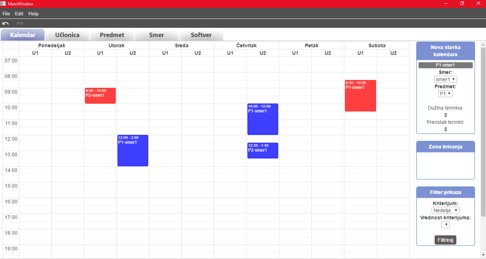
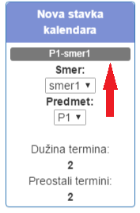
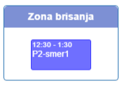
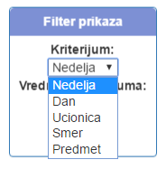

Kalendarski prikaz rasporeda
Na kalendarskom prikazu rasporeda se inicijalno vidi nedeljni prikaz rada računarskog centra, od ponedeljka, do subote.
Napravljen je u vidu šeme, čije kolone predstavljaju dane u nedelji, odnosno učionice, dok su vrste časovi u kojima radi
računarsko centar.

Dodavanje u raspored
Dodavanje novih predmeta na raspored vrši se po principu prevlačenja preko ekrana (drag and drop). Prvo se odabere
željeni smer, zatim predmet u okviru tog smera. Klikne se na plavi pravougaonik koji se potom privuče na bilo koje slobodno
mesto u rasporedu. Ukoliko učionica u koju je nova stavka prevučena, ne zadovoljava sve potrebne uslove za izvođenje
nastave tog predmeta, stavka neće biti dodata u raspored. Isto se dešava i ukoliko se svi predviđeni termini
tog predmeta već nalaze na rasporedu. Dužina polja koju će stavka imati na kalendaru, zavisi od dužine trajanja
termina tog predmeta.

Brisanje iz rasporeda
Brisanje stavki iz rasporeda se radi takođe principom prevlačenja (drag and drop). Odabere se stavka, klikne se mišem
na nju i zatim se prevuče do dela Prevucite ovde za brisanje. Nakon što se stavka obriše, poveća se njen broj
neraspoređenih termina i ona se ukloni iz rasporeda.

Filteri unutar rasporeda
Osim nedeljnog prikaza, na rasporedu su omogućeni i prikazi po: danu, učionici, smeru i predmetu.
Ovaj kriterijum filtera se bira unutar dela Filter.

Nakon što se odabere filter, po kom će da se filtrira prikaz rasporeda, moguće je odabrati i podatak po kom
se filtrira. Ukoliko je odabran filter po danu, u opadajućem meniju ispod će biti ponuđeni svi dani. Nakon odabira određenog
dana i pritiskom na dugme Filtriraj, menja se prikaz rasporeda.
Link do početnog prozora za pomoć: Početna stranica